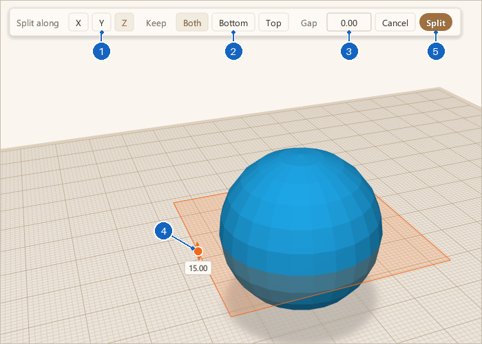
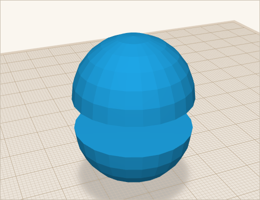
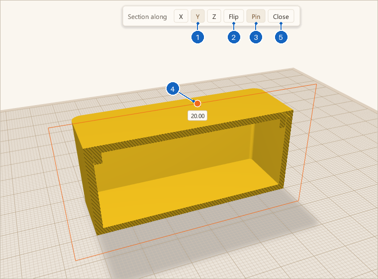

Chapter 7
Split and section view
Both tools use a flat plane through a part. Split cuts the part in two along it. Section view only hides one side, so you can look inside; the part itself is untouched.
Split
Split a part to print it in pieces: a tall part in two halves that each fit the printer, or a ball as two domes that need no support.
- Select the part and press K, or click the Split button.
- Set up the cut with the bar at the top of the view.
- Click Split, or press Enter.

- Split along. The direction the cut is made across: X and Y cut the part into left and right or front and back, Z into bottom and top. Keys: X, Y, Z.
- Keep. Both halves, or only one of them.
- Gap. Moves one half away from the other by this much after the cut, so the two pieces don't sit touching.
- The cut's position. Drag the orange handle to move the cut, or click the number beside it and type. The view shows the two halves as they will be.
- Split makes the cut. Cancel, or Esc, leaves the part whole.

The two halves are new shapes. To print a ball as two domes, split it, then use Lay flat on the cut face of the upper half.
Splitting is one step to undo: Ctrl+Z brings the whole part back.
Section view
Section view cuts the picture, not the part. Everything on one side of a plane is hidden, and the cut faces are drawn hatched, so you can check a wall thickness, a hidden pocket or how two parts fit together.
Press Shift+K, or click the Section view button.

- Section along. The direction the plane faces: X, Y or Z.
- Flip shows the other side of the plane.
- Pin keeps the section open while you select and move shapes, so you can work on the inside of a part. With it off, the section closes when you select something else.
- The plane's position. Drag the orange handle, or click the number and type.
- Close, or Esc, ends the section view.
With shapes selected when you start, the section cuts only those shapes and leaves the rest whole. With nothing selected it cuts everything.
The design is never changed by a section view. Exports, the filament estimate and the print check all use the whole parts.